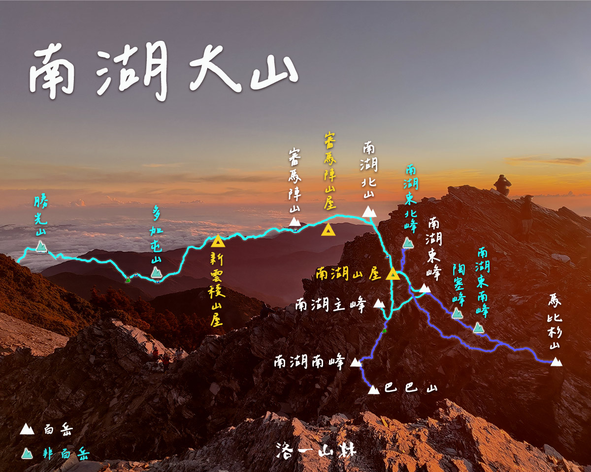

雲稜山莊
海拔 2,615m，D1、D3 夜宿。木造山屋，設有通鋪與廁所。供應晚餐與早餐，可提供素食（請事先於群組告知）。
實際活動視天候與團員狀況由領隊調整。
南湖大山位於中央山脈北段，四天三夜縱走北一段精華路段，從勝光登山口入山，歷經審馬陣草原、五岩峰技術路段、圈谷冰河地景，最終攻頂台灣第八高峰。全程累計爬升約 3,400 公尺，D3 攻頂日行走達 12 小時，為進階高山難度行程。

| 時間 | 地點 | 海拔 | 備註 |
|---|---|---|---|
| 06:00 | 台北火車站西三門 | — | 集合 |
| 10:00 | 勝光登山口 | — | 整裝出發 |
| 12:30 | 松風嶺 | 2795m | 午餐自理 |
| 15:00 | 木杆鞍部 | — | 中央尖/南湖岔路 |
| 17:00 | 雲稜山莊 | 2615m | 供晚餐；素食請群組事先告知 |
| 時間 | 地點 | 海拔 | 備註 |
|---|---|---|---|
| 06:30 | 起床早餐 | — | 依季節日出由領隊調整 |
| 07:00 | 出發 | — | |
| 09:45 | 審馬陣山（百岳） | 3141m | |
| 12:30 | 北山岔路口 | — | 午餐自理 |
| 12:50 | 南湖北山（百岳） | 3536m | 蘭陽溪源頭 |
| 15:00 | 南湖北峰 | 3592m | 五岩峰路段 |
| 15:45 | 南湖山屋 | 3394m | 圈谷營地 |
| 時間 | 地點 | 海拔 | 備註 |
|---|---|---|---|
| 03:00 | 起床 | — | 依日出由領隊調整 |
| 04:00 | 出發 | — | 頭燈摸黑 |
| 06:30 | 南湖大山主峰（百岳） | 3742m | 日出 |
| 08:30 | 南湖東峰（百岳） | 3632m | 與主峰順序可對調 |
| 10:00 | 南湖山屋 | 3394m | 整裝回程 |
| 16:30 | 雲稜山莊 | 2615m |
| 時間 | 地點 | 備註 |
|---|---|---|
| 06:00 | 出發 | |
| 09:45 | 松風嶺 | |
| 14:00 | 勝光登山口 | |
| 18:00 | 台北車站 | 解散 |
海拔 2,615m，D1、D3 夜宿。木造山屋，設有通鋪與廁所。供應晚餐與早餐，可提供素食（請事先於群組告知）。
海拔 3,394m，位於南湖圈谷內，D2 夜宿。供應晚餐與早餐（D3 凌晨出發供早餐）。山屋空間有限，請遵守山屋規範。